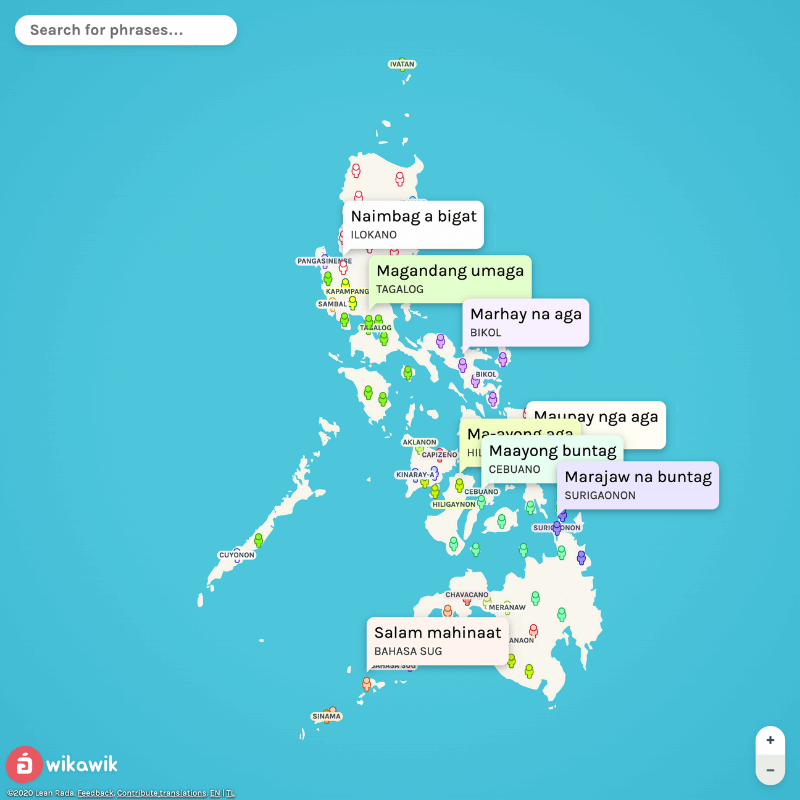

Wikawik is an interactive visualization of the numerous languages spoken in the Phlippines.
Go to the app How to use
- Zoom and pan the map around to navigate.
- Click on a person marker on the map to view details about the language and the locality.
- Use the search bar to change the translated phrase.
Feedback
- Use the Feedback form for errors and general feedback.
- Use the Contribute form to add translations in your native language.
Disclaimers and more information
See more
Information presented in the web app is not guaranteed to be accurate. They were derived from public datasets of PSA and KWF. The PSA census tends to merge different minority languages into one, misrepresenting them. For example, various Aeta languages have been merged into one label called "Aeta/Agta". Another one is the lumping of Bicol languages into one.
There were also many inconsistencies, even between PSA and KWF, especially on the classification of dialects versus languages. In order to get better representation of each language in the Philippines, I have modified the dataset based on other sources, such as Ethnologue and Glottolog. In the end, the goal was to showcase the languages of the Philippines and promote preservation of cultural heritage. Quantitative accuracy is secondary.
Translated phrases were sourced from multiple places, such as Internet lists, language tutorials, chatter in public Facebook groups of tribespeople, bilingual dictionaries, and translated Bibles made by missionaries for indigenous people. If you are a native speaker or an expert, please let me know of any errors through the feedback form.
Placement of markers (the person icon) on the map is only accurate to the provincial level. Within the province, they are scattered randomly. The marker might not exactly tell where the language is spoken within the province. This is evident in large provinces, like Quezon and Zamboanga del Sur.
For simplicity, spellings were standardized using the Latin alphabet + Ñ, also known as the Filipino Alphabet. Diacritics were not added. It is important to note that not all Philippine languages are pronounced like Tagalog (i.e., pronounced plainly as spelled). There are some languages that have more than 5 vowels and cannot be fully expressed using the basic Filipino Alphabet. For example, in Aklanon, the “e” in “Akeanon” is pronounced as a consonant that sounds like something between “r” and “l”. In some other languages, like Maranao, the “e” may be pronounced as an “uh” (schwa), as in “Meranaw“. (In general, beware of “e”s.) The Tagalog-based Ortograpiyang Pambansa prescribes spelling this as “ë”. Please consult a native speaker for proper pronunciation. Don’t try this at home.